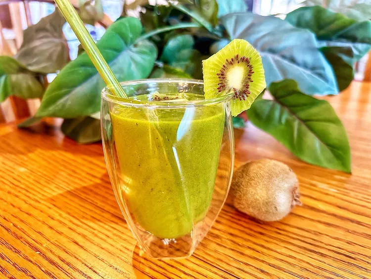

Kiwi Smoothie

Description
This 4-ingredient kiwi smoothie is sweetened with a frozen banana to
eliminate the use of ice. It’s also packed with protein, and the
combination of spinach and soy milk will keep you feeling full through the
morning.
Ingredients
- 2 kiwi, peeled
- 1 banana, frozen, broken into chunks
- 1 cup spinach
- 1/2 cup soy milk
Steps
-
Place kiwi, banana, spinach, and soy milk in the jar of a blender; cover
and blend until smooth, about 1 minute.